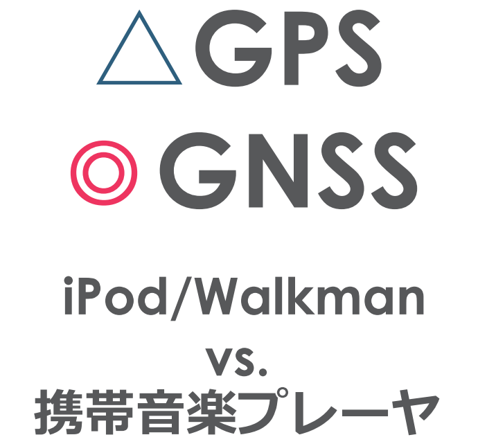

GNSSの仕組み
GNSS - Global N avigation Satellite System
- 衛星からの電波を受信することにより、緯度・経度・高度の連続観測ができる測位システム
- GNSS：衛星測位のシステムの総称
- GPS（アメリカ合衆国）、Galileo（ヨーロッパ連合）、GLONASS（ロシア）、北斗（中国、QZSS（日本）

GPS - Global Positioning System
1978 最初の測地衛生の打ち上げ
1993 システムの正式運用
1996 平和的民生利用への政策指針
1998 GPS利用の日米協力推進体制
2000 May 精度劣化操作（SA）の解除
現在：衛星数24個（予備含め約30個）

GNSSの基本構成


GPS衛星からの電波信号
- 2種類の搬送波
- L1帯：1,575.42 MHz
- L2帯：1,227.6 MHz
- 測距信号
- 混線防止と衛星識別のため、疑似ランダム雑音符号（PRN）により暗号化される
- C/Aコード：L1波、民生用に開放
- P(Y)コード：L1・L2波、米軍用に限定（観測は可能）
- 補正信号
- SBAS (Satellite-Based Augmentation System)
GNSS測量の分類と概要
| GNSS(GPS)測位法の種類 | 観測時間 | 成果課題 | 測位精度（水平方向） | 適用領域 |
|---|---|---|---|---|
| 単独即位 | 数分～数秒 | リアルタイム | 10 m～ | 船・車などのナビゲーション |
| 相対測位・ディファレンシャル法（DGNSS） | 数秒～数分 | リアルタイム/後処理 | 0.1～数 m | 航空機のナビゲーション、船位測量、工事用車両の運行管理 |
| 相対測位・干渉測位・スタティック法 | ＞60分 | 後処理 | 5 mm | 1～4級基準点測量、地すべり観測 |
| 相対測位・干渉測位・短縮（高速）スタティック法 | 10~20分 | 後処理 | 5 mm | 3～4級基準点測量 |
| 相対測位・干渉測位・後処理キネマティック法（PPK） | ＞1分 | 後処理 | 10-20 mm | 3～4級基準点測量 |
| 相対測位・干渉測位・リアルタイムキネマティック法（RTK） | 数秒～1分 | リアルタイム | 10～20 mm | 3～4級基準点測量 |
GNSS受信機価格帯（JPY）
| 測位法 | 価格（JPY） | 精度 |
|---|---|---|
| 単独即位 | 数千～数万 | 101 m |
| ディファレンシャル即位 | 数十万 | 10-1～100 m |
| 干渉測位（RTK, VRS, スタティック） | 数百万 | 10-3～10-2 m |
単独即位
- 1台の受信機を用いて同時に4個以上の衛星からの電波を受信
- 測点から各衛星までの距離
⇒後方交会法によって観測点の位置を求める

ディファレンシャル即位（DGPS）
- 複数の観測点（基準局と移動局で同時に単独即位を行い、肯定された基準局からの相対位置で移動局の誤差補正を行う。

SBAS（Satellite-Based Augmentation System）
- 補正信号が静止衛星から送信される
- リアルタイムなディファレンシャル即位
- 精度：- 5 m程度
- 地域別に運用
- 静止衛星であるため常時補足可能
- 米国：WAAS（Wide Area Augmentation System）
- EU：EGNOS（European Geostationary Navigation Overlay Service）
- 日本：MSAS（MSTAT-based Satellite Augmentation System）＝ひまわり
- 航空機やハンディGPSにも搭載
各地域におけるSBASの運用

米国WAAS：2003年7月～
日本MSAS：2007年9月～
欧州GNSO：2005年～
インドGAGAN：2013年以降
干渉測位
- 搬送波の位相差を利用する高精度測位法
- 基線解析
- 2台の受信機（基地局・移動局） ⇒同時に受信した搬送波の位相差を測定
- 基線ベクトル（受信機間のの距離と方向）の算定
- 整数値バイアス
- 位相差測定で読み取り可能なのは1波長未満だけで、整数部分は不確定
- 観測開始時にこれの確定（初期化）が必要
干渉測位の種類
- 静的干渉測位（スタティック法）
- 1時間以上の連続観測
- 高速（短縮）スタティック法：10～20分
- 1時間以上の連続観測
- 動的干渉測位（キネマティック法）
- 初期化（整数値バイアスを決定・保存）後、後処理で基地局と移動局間の基線ベクトルを算出
- 測点ごとの整数値バイアスの確定作業が不要
- 各測点において数秒～1分程度に観測
- リアルタイムキネマティック（RTK）即位
- 基線解析のリアルタイム処理
- 基地局と移動局間相互の無線通信 （Bluetoothや携帯電話網（VRS）など）
- 初期化（整数値バイアスを決定・保存）後、後処理で基地局と移動局間の基線ベクトルを算出
電子基準点
- 国土地理院が全国約1,200箇所に設置しているGPS連続観測局
- 1994年～
- 地殻変動等の連続観測
- ディファンシャル/キネマティック補正のための基地局データを提供
- 2015年6月29日リニューアル

準天頂衛星システム
- QZSS：Quasi-Zenith Satellite System
- 宇宙航空研究開発機構（JAXA）
- 準天頂衛星初号機みちびき（QZS-1）
- 2010年9月11日打ち上げ
- GPSの補完・補強
- 常に天頂付近に衛星がある！
- 補正信号⇒測位精度を高める
- 目標精度
- 高速移動体で１m以上
- 低速移動帯で数cm